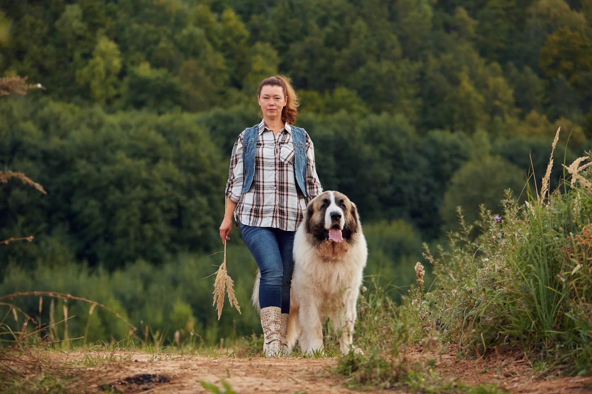
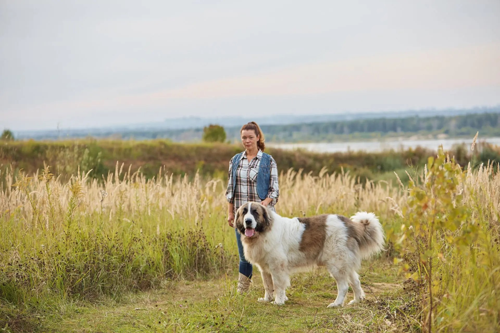
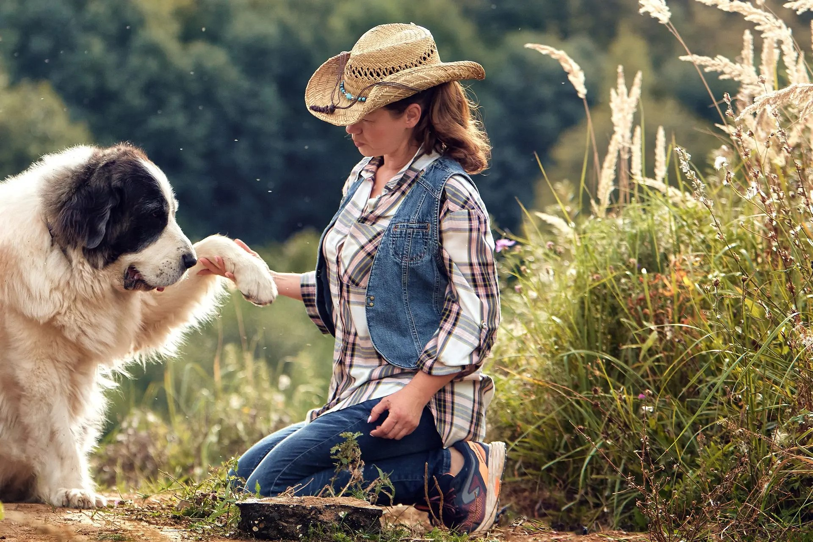
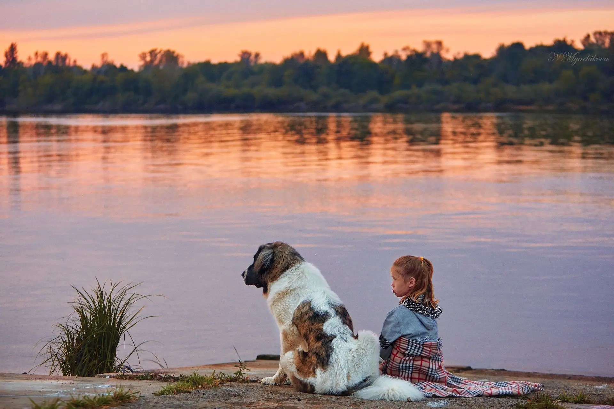
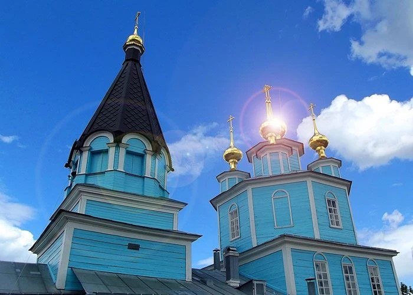
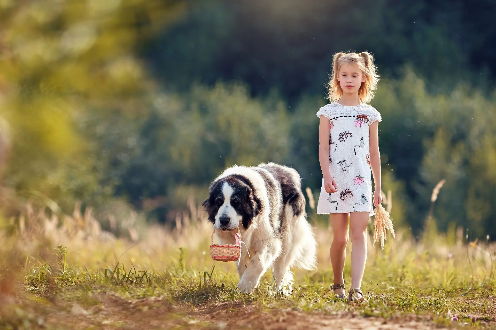

Первое знакомство01
Пиренейский мастиф:
от мечты к реальности
Увидеть редкую породу вблизи, услышать историю питомника и задать первые вопросы заводчику.
4 000 ₽за человека
↗
Питомник Fromaragon приглашает
Знакомиться с благородными великанами.
Узнавать жизнь питомника. Замедляться у Волги.
Собаки. Люди. Свой ритм.
Здесь знакомятся с пиренейскими мастифами и человеком, который посвятил им свою жизнь.
Приезжайте семьёй, вдвоём или небольшой компанией: узнать характер редкой породы, поговорить с Екатериной, увидеть питомник и познакомиться с органическим птицеводством.
А если вы выбираете собаку или хотите разобраться в породе глубже — посвятим встречу вашим вопросам.
Кто вас встречаетНачните с этого визита
02 / В гости
Полдня в мире Fromaragon: мастифы, редкие птицы, разговор о породе и натуральном хозяйстве.
Для семей, любителей собак и тех, кто хочет узнать больше о жизни на природе.
Выберите, сколько времени хотите провести вместе.
Увидеть редкую породу вблизи, услышать историю питомника и задать первые вопросы заводчику.
Для будущих владельцев и тех, кто хочет понять породу через повседневную жизнь питомника и личное общение.
Визиты — по предварительной договорённости. Для программ «от» итоговая стоимость за человека зависит от согласованного состава визита. Программу и условия участия детей обсудим до поездки.
Человек, который вас встречает
Кинолог · заводчик · хозяйка Fromaragon
«Я искала собаку. А нашла породу, которая изменила мою жизнь».
Так начинается личная история, из которой выросли питомник, знания о пиренейских мастифах и желание делиться ими с другими.
Екатерина развивает породу, создаёт просветительские и обучающие программы, рассказывает о жизни на природе и ведении натурального хозяйства.
Выпускница Школы фермера и Академии агротуризма. Создатель семейного проекта «Лесная ферма 41Га».
История породы и питомника на Fromaragon

Время, которое остаётся с вами
Ужин, баня, ночь у Волги.
А утром — питомник и прогулка
с Екатериной и собаками.
Место встречи
03 / БезводноеВолга, луговые тропинки и вечера у воды — часть жизни питомника и вашей поездки.
Планируйте время без спешки: на знакомство, разговор и возможность просто побыть здесь.
Точное место встречи и подсказки по дороге Екатерина сообщит при согласовании визита.


По вашему поводу
Фотосессия с мастифами, «Званый ужин» или частный визит — расскажите, что задумали. Екатерина поможет обсудить формат.
Обсудить свою идеюСледующая глава
Семейный агротуристический проект Екатерины — продолжение истории Fromaragon. Сегодня знакомимся в Безводном, а впереди — новая территория и новые встречи.
От приглашения — к встрече
Расскажите, когда хотите приехать и с кем. Выберем визит, обсудим детали и согласуем дату.
Контакты пока оставлены заглушками. В этом варианте можно подготовить текст обращения; отправка не подключена.